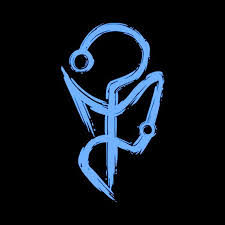
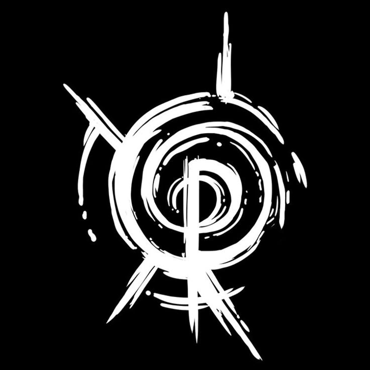
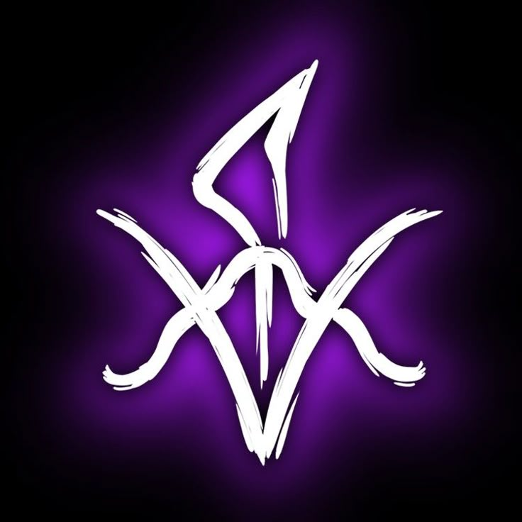
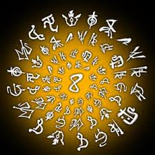
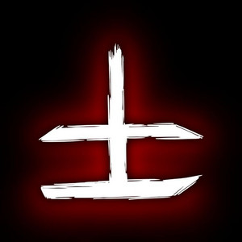

O Paranormal não vem para o nosso mundo de maneira fácil — ou, pelo menos, assim deveria ser. O mundo em que vivemos não é o único. O universo que habitamos, a Realidade, é protegido por uma barreira invisível: uma membrana.
Além dela, existe um lugar de insanidade e medo, habitado por forças malignas; essa dimensão é conhecida como o Outro Lado.
As entidades do Outro Lado usam seus poderes para atravessar a membrana e aterrorizar as pessoas inocentes que vivem na Realidade. Pessoas comuns... pessoas como nós.
Mas você não é uma delas. Você lutou contra as entidades que saem da membrana e invadem o nosso mundo, custe o que custar.
É uma tarefa árdua, mas você não está sozinho. Uma Ordem criada para proteger a Realidade está do seu lado. Você é um agente dessa Ordem e esta é a sua história.

Anotação de Campo — Registro Confidencial: O Medo não é apenas um elemento, é a própria Entidade do Outro Lado. Ele é o ponto zero, a força vanguardista que permite que tudo o que é impossível se manifeste na nossa Realidade.
Diferente do Sangue ou da Morte, o Medo não segue o ciclo de fraquezas; ele é o combustível. Quando a Membrana — aquela barreira que separa nosso mundo do Paranormal — é enfraquecida pelo medo coletivo ou por rituais, é o elemento Medo que abre a passagem.
Em campo, a manifestation pura dele é indescritível. Não é uma cor ou uma forma sólida; é algo translúcido, como uma chama transparente ou uma névoa que distorce o espaço ao redor. É como se o cérebro humano falhasse ao tentar processar o que está vendo.
Para nós, agentes, lidar com ele é um sacrifício. Não existe 'afinidade' com o Medo. Conjurar seus rituais drena a Sanidade de forma permanente, esvaziando um pedaço da mente a cada uso.
E contra as criaturas que carregam essa essência, força bruta não basta: se você não resolver o Enigma de Medo, você não as atinge.

Anotação de Campo — Registro Confidencial: A Morte é a entidade que distorce o tempo para consumir o potencial de vida. Ela se manifesta através do Lodo, uma substância negra e viscosa que corrompe tudo o que toca, acelerando ou parando o fluxo da existência.
Diferente do Sangue, que busca a intensidade e a emoção, a Morte busca a estagnação e o fim. Ela é o elemento que oprime a Energia, drenando o caos e o movimento para transformar tudo em um silêncio eterno e frio.
Em campo, sua presença é notada pela queda da temperatura e pelo cheiro de lodo e mofo. A Membrana, quando afetada pela Morte, torna-se espessa e pesada, fazendo com que cada segundo pareça durar uma eternidade para os agentes despreparados.
Agentes com afinidade com este elemento frequentemente perdem a noção do tempo e desenvolvem uma paciência perturbadora. Seus rituais manipulam a percepção temporal, envelhecendo objetos ou retardando ferimentos mortais.
Enfrentar criaturas de Morte é uma corrida contra o inevitável. Sem o auxílio do Conhecimento, que oprime a Morte através da lógica e do registro eterno, você será apenas mais uma vida devorada pelo fluxo do tempo.

Anotação de Campo — Registro Confidencial: A Energia é a entidade do caos, da mudança e do imprevisível. Ela se manifesta através de luzes intensas, eletricidade, frio extremo ou calor insuportável, transformando a Realidade em algo instável e em constante mutação.
Diferente do Conhecimento, que busca a ordem e o padrão, a Energia busca a entropia. Ela é o elemento que oprime a Morte, pois onde há caos e transformação constante, a estagnação e o fim não conseguem se estabelecer.
Em campo, sua presença é sentida por interferências em aparelhos eletrônicos e mudanças climáticas súbitas. Quando a Membrana é afetada pela Energia, ela se torna volátil, fazendo com que as leis da física deixem de fazer sentido e o acaso passe a governar o ambiente.
Agentes com afinidade com este elemento costumam ser impulsivos e ter dificuldades em manter o foco, agindo por puro instinto. Seus rituais manipulam as probabilidades e as forças elementais, criando explosões de poder ou alterando a sorte a seu favor.
Enfrentar criaturas de Energia é lidar com o puro inesperado. Sem o auxílio do Sangue, que oprime a Energia através da força bruta e da vitalidade física que ancora o ser no presente, você será apenas mais uma vítima da imprevisibilidade do caos.

Anotação de Campo — Registro Confidencial: O Conhecimento é a entidade da lógica, da percepção e da verdade absoluta. Ele se manifesta através de símbolos, escritas antigas e uma sede insaciável por entender os segredos do universo, transformando a mente em um repositório de fatos que a Realidade tenta esconder.
Diferente da Energia, que busca o caos e a mudança, o Conhecimento busca a ordem e o registro eterno. Ele é o elemento que oprime a Morte, pois através da consciência e da memória, o legado de um ser pode transcender o fim biológico e a estagnação do tempo.
Em campo, sua presença é notada por sussurros ininteligíveis e uma sensação de estar sendo observado por olhos invisíveis. Quando a Membrana é afetada pelo Conhecimento, as paredes podem se cobrir de siglas e frases, tornando o ambiente um quebra-cabeça mental onde a ignorância é a única proteção.
Agentes com afinidade com este elemento tornam-se calculistas e muitas vezes frios, priorizando a informação acima da empatia. Seus rituais manipulam a mente e a percepção, permitindo ver através de ilusões, ler pensamentos ou paralisar inimigos com verdades avassaladoras.
Enfrentar criaturas de Conhecimento é lutar contra uma inteligência superior que já previu seus movimentos. Sem o auxílio da Energia, que oprime o Conhecimento através da imprevisibilidade e do acaso que desafia qualquer lógica, você será apenas um peão em um plano que não consegue compreender.

Anotação de Campo — Registro Confidencial: O Sangue é a entidade da emoção, da dor e da vitalidade desenfreada. Ele se manifesta através de fluidos corporais, carne exposta e uma fome insaciável por sentir tudo com a máxima intensidade, transformando a Realidade em um cenário visceral de instinto puro.
Diferente da Morte, que busca o silêncio e o fim, o Sangue busca a euforia e a reprodução constante. Ele é o elemento que oprime a Energia, pois a força física bruta e a presença carnal ancoram o ser no agora, impedindo que a instabilidade volátil do caos o desintegre.
Em campo, sua presença é notada pelo calor excessivo, o som de batimentos cardíacos acelerados e um cheiro metálico sufocante. Quando a Membrana é afetada pelo Sangue, o ambiente parece ganhar vida própria, com paredes que pulsam e superfícies que sangram diante dos olhos dos agentes.
Agentes com afinidade com este elemento tornam-se passionais e agressivos, muitas vezes perdendo o controle em momentos de tensão. Seus rituais manipulam a biologia e a dor, permitindo regenerar ferimentos instantaneamente, aumentar a força muscular ou controlar os fluidos vitais de seus inimigos.
Enfrentar criaturas de Sangue é um teste de resistência física e mental contra a fúria absoluta. Sem o auxílio do Conhecimento, que oprime o Sangue através da frieza lógica e da análise racional que entende os limites da carne, você será apenas mais uma poça vermelha no chão.